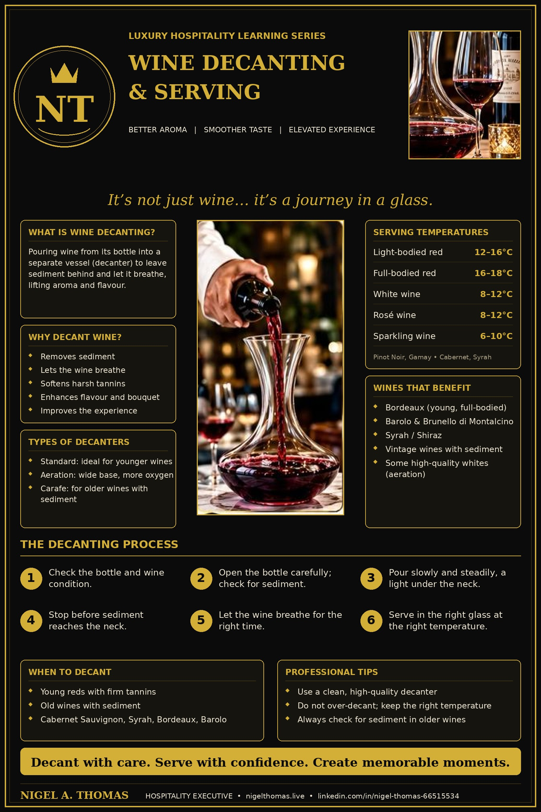

Wine Decanting & Serving: A Complete Guide for Hospitality Professionals
It’s not just wine… it’s a journey in a glass. Decanting is one of the few moments in table service where technique, patience and showmanship meet, and when it is done well the guest tastes the difference. This guide explains what decanting is, why it works, when to do it, and exactly how to do it with confidence on the restaurant floor.
What Is Wine Decanting?
Decanting is the careful pouring of wine from its bottle into a separate vessel, called a decanter, so that the wine can be separated from any sediment and exposed to air before it is served. The decanter is usually a wide-bottomed glass vessel with a long neck, although the shape varies a great deal. The idea is simple: the bottle is a sealed, oxygen-poor environment, and the decanter is a larger, open one.
Two different goals are bundled into the single word “decanting”, and a good wine professional always knows which one applies to the bottle in front of them. The first goal is separation: removing a wine from the solid deposit that has formed in the bottle over years. The second is aeration: giving a young, closed or tannic wine contact with oxygen so that its aromas open and its texture softens. Some wines need one, some need the other, some need both, and some need neither.
A Short History of the Decanter
Wine vessels existed long before glass decanters. Ancient Romans and Greeks served wine from clay jugs and bronze vessels, often diluted with water. Decanting in its modern sense grew up alongside the glass bottle. As bottles with tight-fitting corks became common in the seventeenth and eighteenth centuries, wines could be aged for years, and ageing produces sediment. Pouring the clear wine off the deposit into a clean vessel became a natural part of serving mature wine, and the decanter became a fixture on formal dining tables, especially for Port and Bordeaux.
Today’s wines are generally filtered and cleaner than those of two centuries ago, so sediment is less common in young bottles. But fine, aged and unfiltered wines still throw a deposit, and the second reason for decanting, aeration, has become just as important. The decanter has survived because it still works, and because it still makes an impression at the table.
Why Decant Wine? The Five Benefits
1. It removes sediment
As red wine ages, pigments, tannins and tartrate crystals bind together and fall out of solution. This sediment is harmless but gritty and bitter, and it clouds the wine in the glass. It is most common in older reds, vintage Port and unfiltered wines. Decanting leaves the deposit behind in the bottle.
2. It lets the wine breathe
When a bottle is opened, the wine has had little contact with oxygen for years. Pouring it into a wide vessel increases the surface area exposed to air. Volatile aroma compounds are released, and a wine that smelled tight or closed can show fruit, spice and floral notes within minutes.
3. It softens tannins
Tannins give red wine its grip and structure. In young, powerful wines they can feel harsh. Oxygen helps tannins polymerise and soften over time, and while the effect of an hour in a decanter is modest compared with years in a cellar, many guests notice a rounder, smoother texture.
4. It blows off unwanted aromas
Some wines, particularly those made with minimal oxygen exposure, can show a brief “reductive” smell, similar to struck match or rubber, when first opened. Air usually clears this quickly. Decanting is a gentle way to do it.
5. It elevates the guest experience
Service is part of the product. A well-executed decant tells the guest that the bottle matters and that the house cares. In a luxury resort or fine-dining room, it is a small piece of theatre that supports the price of the wine.
Types of Decanters
Choosing the right vessel is part of the skill. The three main styles you will meet in hospitality are described below.
| Type | Design | Best used for |
|---|---|---|
| Standard decanter | Wide base, tapering neck, usually with a stopper. The most common shape. | Young and full-bodied reds, and general-purpose service. |
| Aeration decanter | Very wide base or unusual shape (swan, duck, spiral) that maximises surface area for oxygen contact. | Young, tannic wines that need maximum opening up in a short time. |
| Carafe | Simple, elegant, smaller base with less surface area. | Older, delicate wines with sediment, where you want to separate rather than aerate. |
Whatever the style, the decanter must be spotless, odour-free and sparkling clear. Never use detergent with a strong scent. Rinse with hot water, then very hot water, and let it drain upside down on a proper drying rack. A lingering smell of soap or a damp cloth will ruin a fine wine faster than any amount of poor timing.
When to Decant
- Young red wines with firm tannins, to soften them and open up the flavours.
- Old wines with sediment, to separate the clear wine from the deposit.
- Full-bodied reds such as Cabernet Sauvignon and Syrah or Shiraz.
- Wines with strong tannins such as Bordeaux and Barolo.
- Vintage Port, which almost always throws a heavy deposit.
- Some high-quality white wines that are rich or tightly wound, for aeration only.
When Not to Decant
Decanting is not a universal upgrade. Very old and fragile wines can fade within minutes of meeting oxygen, and some bottles of great age should be poured off the sediment only moments before serving, or served straight from the bottle with care. Light, delicate wines, simple everyday whites and rosés, and most sparkling wines do not need a decanter. For sparkling wines, decanting would flatten the mousse, which is much of the appeal.
When in doubt, taste. Pour a small amount, assess the aroma and structure, and let the wine tell you what it needs. A confident server who tastes first will always outperform one who follows a rule blindly.
Popular Wines That Benefit From Decanting
| Wine | Why it benefits | Typical decanting time |
|---|---|---|
| Bordeaux (young and full-bodied) | High tannin and structure, built for ageing. | 1 to 2 hours |
| Barolo and Brunello di Montalcino | Powerful Nebbiolo and Sangiovese tannins and high acidity. | 2 hours or more for young bottles |
| Syrah / Shiraz | Dense fruit and spice that open with air. | 1 to 2 hours |
| Cabernet Sauvignon | Firm tannins and concentrated fruit. | 1 to 2 hours |
| Vintage wines with sediment | Deposit needs to be left behind. | Decant shortly before service |
| Light-bodied reds (Pinot Noir, Gamay) | Gentle aeration only; delicate aromas fade quickly. | 20 to 45 minutes at most |
| Rich white wines | Aeration lifts aroma in tightly closed bottles. | 15 to 30 minutes, chilled |
These timings are guidelines, not laws. Vintage, producer, bottle age and storage all change the answer. A twenty-year-old Bordeaux from a great year and a young Bordeaux from the same château need very different treatment.
Serving Temperatures
Decanting and temperature work together. A wine that is too warm tastes flat, alcoholic and heavy. A wine that is too cold hides its aroma and exaggerates tannin and acidity. Always bring the bottle and the decanter to the right temperature before service, because a decanter left in a hot room will quickly warm the wine inside it.
| Wine style | Examples | Serving temperature |
|---|---|---|
| Red, light-bodied | Pinot Noir, Gamay | 12–16°C (54–61°F) |
| Red, full-bodied | Cabernet Sauvignon, Syrah | 16–18°C (61–65°F) |
| White | Chardonnay, Sauvignon Blanc | 8–12°C (46–54°F) |
| Rosé | Provence, Grenache-based rosés | 8–12°C (46–54°F) |
| Sparkling | Champagne, Prosecco, Cava | 6–10°C (43–50°F) |
In a warm climate, “room temperature” is not the right temperature for red wine. A bottle stored at thirty degrees will taste better after fifteen to twenty minutes in an ice bucket or a chiller before decanting. This is standard practice in many luxury resorts and is worth building into your opening checklist.
The Decanting Process: Step by Step
Before service
If a wine is old and likely to have sediment, ask the kitchen or cellar team to stand the bottle upright for at least 24 hours before service so that the deposit slides to the bottom. Moving the bottle roughly at the last moment will stir everything back into the wine. Prepare a clean decanter, a clean service cloth, a candle or small torch, a corkscrew, and a clean glass for tasting.
Step 1: Check the bottle and the wine’s condition
Look at the label, vintage and producer, and confirm that it matches what the guest ordered. Check the fill level, the condition of the capsule and cork, and any signs of leakage. Present the bottle to the host, label facing them, and wait for their approval before opening it.
Step 2: Open the bottle carefully
Cut the capsule below the lip, wipe the neck, and extract the cork slowly and steadily. With an old, fragile cork, use a long-handled waiter’s friend or an ah-so style opener rather than forcing the screw. Smell the cork and wipe the bottle neck again. Check for sediment now by looking at the base of the neck and the shoulder of the bottle.
Step 3: Pour slowly and steadily
Hold the decanter at a slight angle in one hand, and the bottle in the other. Pour in a smooth, continuous stream along the inside wall of the decanter. When sediment is expected, hold a candle or light source under the neck of the bottle so that you can see the deposit approach as you pour. Never rush, and never stop and start, because stopping lets sediment slide back and mix.
Step 4: Stop before the sediment reaches the neck
As soon as you see the first thread of cloudy wine or fine grit moving toward the neck, stop pouring. Leave the last centimetre or two in the bottle. For very old wines, that discipline is the whole job. Wasting a mouthful is far better than serving a gritty glass.
Step 5: Allow the wine to breathe
Leave the wine to rest for the time suited to its style and age. Young, tannic reds need longer; older wines need only minutes. Do not stopper a decanter if the goal is aeration. If the guests will not drink for some time, offer them a small taste first so that they can judge for themselves.
Step 6: Serve in the right glass at the right temperature
Pour the host’s tasting portion first, then serve ladies and guests clockwise or as house style dictates, finishing with the host. Pour to about one third of the glass, so that the guest can swirl and enjoy the aroma. Keep the decanter on the table within easy reach, or on a side table if the table is crowded, and top up glasses discreetly.
Handling Sediment Like a Professional
Sediment is the single most nervous moment in decanting, and it is entirely manageable with good habits. Keep the bottle as still as you can from cellar to table. If the wine has been stored on its side, transport it in a decanting basket, or carefully stand it upright in advance. Use a bright, steady light behind the shoulder of the bottle and watch the wine as it travels through the neck.
If a little sediment slips through, do not panic. Stop, leave the bottle upright for a minute, and carefully pour the last of the wine through a fine, clean filter or a muslin cloth into a second vessel. This is a rescue technique, not a first choice, and the wine will lose a little freshness, but it saves a bottle that would otherwise be ruined.
Rinsing the Decanter With Wine
Some sommeliers “wine” the decanter before the main pour: they swirl a small amount of the wine around the inside of the clean decanter and discard it. This removes any trace of water, and any faint aroma left in the glass, so that the vessel is coated with the wine that will be served. It is a nice touch for an old and delicate wine, and unnecessary for a robust young red. Never rinse with a different wine, and never leave water in the decanter.
Glassware and Presentation
A decanter and a glass work as a team. Red wines are best in larger, wider bowls that allow swirling and concentrate the aroma toward the rim. Whites suit slightly smaller bowls that keep temperature and preserve freshness. A clean, polished glass free from fingerprints and detergent smell is non-negotiable. Hold glasses by the stem or the base when polishing and serving.
Presentation also includes the table. Make sure there is a coaster or small plate under the decanter, a folded napkin to catch drips, and a safe place to rest the bottle so the guest can still read the label. If the guest wishes to see the bottle again, return it gently and never remove it from the table without asking.
Communicating With the Guest
Technique is only half the job; the other half is conversation. Explain what you are doing in one or two sentences, and avoid jargon that makes a guest feel uninformed. A good script sounds like this: “This is a 2009 Bordeaux with some age on it, so I will decant it carefully to leave the sediment behind. It will take a minute, and I will bring it back to the table in a moment.”
If the wine is young and tannic, you might say: “This Syrah is very youthful. I recommend we decant it for about an hour to soften and open it up. In the meantime, may I bring you a glass of something lighter?” This kind of language creates trust, gives the guest a choice, and often leads to an additional sale.
Common Myths About Decanting
- “All wine should be decanted.” No. Many wines gain nothing, and some lose charm if decanted too long.
- “Older wine always needs longer.” Often the opposite is true. The oldest wines are the most fragile and need the least air.
- “Letting the bottle sit open does the same job.” Only a tiny surface area is exposed in the neck of an open bottle, so very little happens compared with decanting.
- “Decanting is only for expensive wine.” A young, inexpensive red with firm tannins can improve in a decanter as much as a grand cru.
- “Sediment means the wine is bad.” Sediment is a normal sign of age and quality, not a fault.
Common Mistakes to Avoid
- Over-decanting delicate wines until the fruit fades.
- Using a dirty or scented decanter.
- Serving wine at the wrong temperature after decanting.
- Shaking or tilting the bottle on its way to the table.
- Forgetting to check the cork, the aroma and the wine before serving.
- Leaving the decanter unattended and glasses empty.
- Decanting sparkling wine, which flattens the bubbles.
Professional Tips From the Floor
- Use a clean, high-quality decanter, polished and checked under light every shift.
- Do not over-decant; it can affect flavour, especially in older wines.
- Keep the bottle and decanter at the right temperature at all times.
- Serve immediately after decanting for fragile wines, and within a few hours for sturdy ones.
- Always check for sediment, especially in older wines, and use a light source when needed.
- Taste before you serve. If you are unsure, pour a small taste into a glass and decide.
- Record decanting times in the service notes so the next shift can learn from your results.
A Decanting Service Checklist for Restaurants and Resorts
- Confirm the guest’s order and present the bottle to the host.
- Check vintage, producer and fill level; stand old bottles upright in advance.
- Prepare a clean decanter, candle or torch, cloth and glasses.
- Open the bottle quietly and check the cork and aroma.
- Pour a small amount for the host to taste and approve.
- Decant in one smooth pour, stopping before sediment reaches the neck.
- Allow the right breathing time for the wine’s age and style.
- Serve at the correct temperature in clean, appropriate glassware.
- Keep glasses topped up, and store the empty bottle near the table for the guest to see.
- Note the wine, timing and guest feedback for the next service.
Training Your Team
For hotel and resort managers, decanting is a perfect training topic because it combines product knowledge, hand skills and guest communication. Run short practical sessions during pre-shift briefings. Use a rotation: one person opens and presents, one decants, one serves and observes. Give feedback on posture, smoothness, spoken script and the cleanliness of the cloth. Within two weeks, a confident team can decant a bottle of aged Bordeaux without breaking a sweat.
It also helps to build a small wine card for the floor with the house’s top twenty bottles, their ideal decanting times and temperatures, and one memorable talking point for each. A guest who hears a short story about the wine will remember the evening, and a team member who can tell it will feel proud of the service they deliver.
Frequently Asked Questions
How long should I decant red wine?
Young, full-bodied reds usually benefit from one to two hours. Older wines need only enough time to separate from the sediment, often just a few minutes before service. Light reds such as Pinot Noir need only a brief breath.
Can I decant white wine?
Yes, for rich, complex or tightly closed whites. Chill the wine first and decant for fifteen to thirty minutes. Most light, crisp whites do not need it.
Is a decanter better than a wine aerator?
They serve different purposes. An aerator speeds up exposure to air for a single glass. A decanter handles a whole bottle, separates sediment, and adds the visual element of service.
Can I store wine in a decanter?
Only for a few hours. Over longer periods the wine will oxidise and lose freshness, and the stopper does not make the decanter airtight.
What if I do not have a decanter?
A clean glass jug or carafe will do the job, provided it is spotless. The principles of slow pouring and temperature control stay the same.
The Perfect Serve
Good wine deserves time, and time deserves the right care. Decant with care, serve with confidence, and create memorable moments. Whether you work in a boutique café, a five-star resort or a cruise-ship dining room, the same principles apply: understand the wine, respect the guest, and let your technique be calm and quiet. The best decant is the one that the guest barely notices, because the wine simply tastes better and the evening flows.
